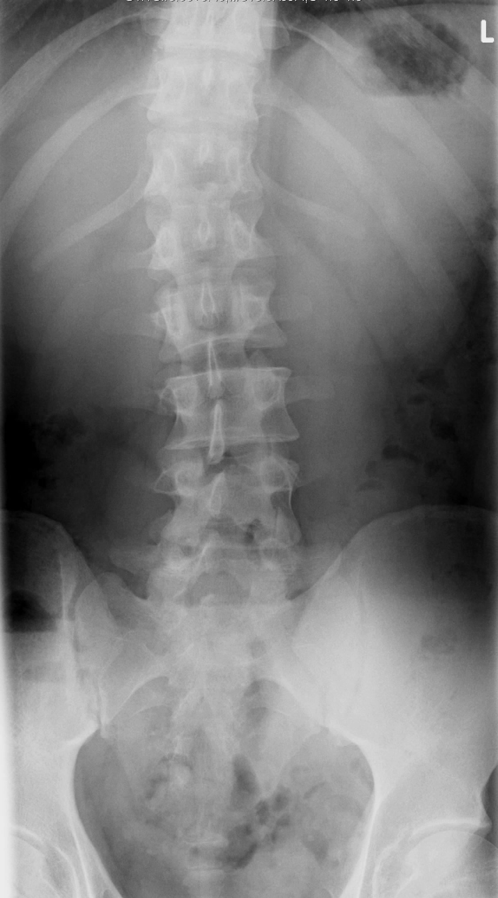

Ficha del catálogo
Escoliosis
- Sistema
- Óseo
- Modalidad
- RX
- Región
- Columna
- Dificultad
- Intermedio
Desviación lateral de la columna en el plano frontal, asociada a rotación de los cuerpos vertebrales. La forma más habitual es la idiopática del adolescente, que aparece durante el estirón puberal y requiere seguimiento radiológico periódico.
Técnica
Telerradiografía de columna completa en bipedestación, en proyección posteroanterior (que reduce la dosis a mama y tiroides) e incluyendo crestas ilíacas para valorar la madurez esquelética.
Qué observar
- Curva principal: Su vértice, su extensión y su lado de convexidad
- Ángulo de Cobb, medido entre las vértebras más inclinadas de cada extremo de la curva
- Rotación vertebral, valorada por la posición de los pedículos respecto a la línea media del cuerpo
- Curvas compensadoras por encima y por debajo de la principal
- Signo de Risser en la cresta ilíaca, que indica cuánto crecimiento queda por delante
- Anomalías vertebrales congénitas (hemivértebras, barras) que apuntan a escoliosis no idiopática
Hallazgos
Desviación lateral de la columna con rotación vertebral asociada y curvas compensadoras.
Perlas
El ángulo de Cobb marca la conducta: Por debajo de 25° se vigila, entre 25 y 45° suele indicarse corsé, y por encima de 45-50° se valora cirugía. Por eso la medición debe hacerse siempre con el mismo método para poder comparar entre estudios.
Diagnóstico diferencial
- Escoliosis idiopática del adolescente
- La curva es estructural, con rotación vertebral asociada, sin anomalías vertebrales congénitas ni signos neurológicos, y aparece en el periodo de crecimiento rápido.
- Escoliosis congénita
- Se identifican defectos de formación o de segmentación, como hemivértebras, vértebras en cuña o barras óseas unilaterales, que explican la curva desde el nacimiento.
- Escoliosis neuromuscular
- La curva suele ser larga, en C, con oblicuidad pélvica marcada, en un paciente con enfermedad neurológica o muscular conocida.
- Actitud escoliótica antiálgica o por dismetría
- No hay rotación vertebral y la curva se corrige al compensar la diferencia de longitud de los miembros o al desaparecer el dolor.
- Escoliosis degenerativa del adulto
- Aparece de novo en la edad madura sobre cambios degenerativos avanzados, con pinzamiento discal asimétrico y artrosis facetaria.
- Escoliosis secundaria a tumor o siringomielia
- Se sospecha ante curva izquierda torácica atípica, dolor nocturno, progresión rápida o signos neurológicos, y obliga a estudiar el neuroeje con resonancia.
Simuladores
- Una mala colocación con rotación del paciente o con reparto asimétrico del peso genera una curva aparente que no existe.
- La dismetría de miembros inferiores inclina la pelvis y produce una curva compensadora que desaparece al igualar la altura con un alza.
- Una postura antiálgica por hernia discal o por contractura simula escoliosis pero carece de rotación vertebral verdadera.
- La medición del ángulo de Cobb con vértices distintos entre controles crea falsas progresiones o falsas mejorías.
Por modalidad
- RX
- Método de referencia para diagnosticar, medir el ángulo de Cobb, valorar la madurez esquelética y seguir la evolución con la menor dosis posible.
- RM
- Indicada ante curvas atípicas, dolor, alteración neurológica o inicio precoz, para descartar malformación del neuroeje, siringomielia o tumor.
- TC
- Aporta detalle óseo tridimensional en las anomalías congénitas complejas y en la planificación quirúrgica de instrumentaciones.
- US
- Se emplea en algunos programas de tamizaje y de seguimiento sin radiación, así como para valorar anomalías renales asociadas a escoliosis congénita.
Protocolo
Se realiza una telerradiografía de columna completa en bipedestación, con el paciente descalzo, los pies juntos y los brazos en una posición estandarizada que no oculte la columna, incluyendo desde la base del cráneo hasta las crestas ilíacas. Se prefiere la proyección posteroanterior porque reduce de forma notable la dosis a mama y tiroides, con protección adicional cuando es posible, y se emplean sistemas de baja dosis en el seguimiento de pacientes jóvenes. Se añaden proyecciones en inclinación lateral cuando se necesita conocer la flexibilidad de la curva antes de una cirugía.
Clasificación
El ángulo de Cobb es la medida estándar y se obtiene trazando líneas desde el platillo superior de la vértebra más inclinada del extremo proximal y desde el platillo inferior de la más inclinada del extremo distal, midiendo el ángulo que forman sus perpendiculares. El signo de Risser gradúa la madurez esquelética según cuánto ha progresado la osificación de la cresta ilíaca, de lateral a medial, y cuánto queda de crecimiento. La clasificación de Lenke organiza las curvas por su tipo, por el modificador lumbar y por el perfil sagital torácico, y es la referencia en planificación quirúrgica.
Errores frecuentes
- Medir el ángulo de Cobb eligiendo vértebras límite distintas en cada control, lo que hace imposible valorar la progresión real.
- No informar el signo de Risser ni el estado de las fisis, dato imprescindible para estimar el riesgo de progresión.
- Pasar por alto anomalías vertebrales congénitas y asumir que toda escoliosis es idiopática.
- No advertir los datos de alarma que obligan a resonancia, como una curva torácica de convexidad izquierda, el dolor persistente o el inicio a edad temprana.

escoliosis columna cobb risser adolescente deformidad rotacion